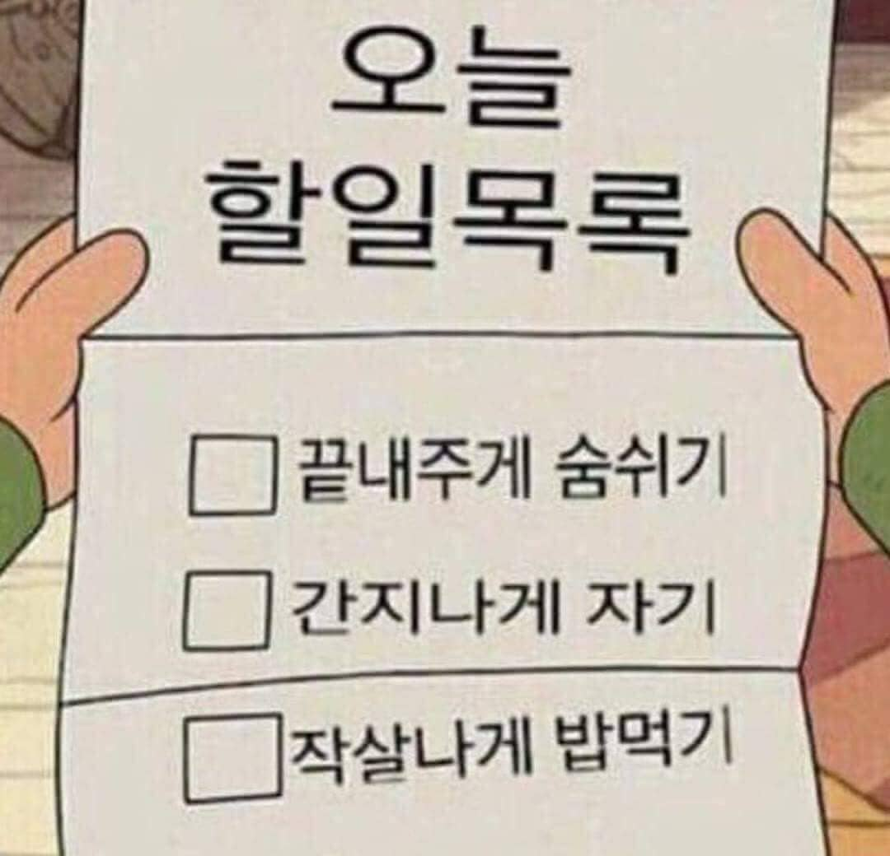

<h1><u>오늘 해야할 일!</u></h1>
<br>
<h2>꼭 해야할일</h2>

-책 읽기(파워) 50p
<br>-WEB1 마무리 짓기
<br>-운동 8시
<br>-감사일기 쓰기
<br>-안드로이드 다시 해보면서 복습하기
<br>-저녁 맛있게 먹기
<br><br>
<p><br>
  
<style="margin-top: 60px;">
<h2>해야하지만 덜 중요한것들</h2>
-숨쉬기
<br>-생각하기
</p>


